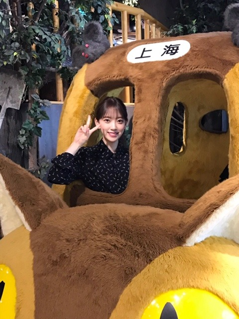
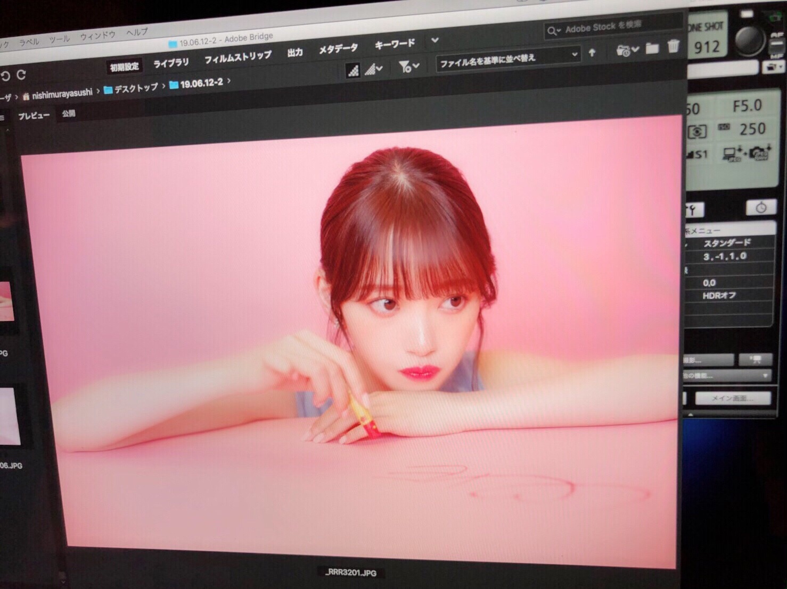
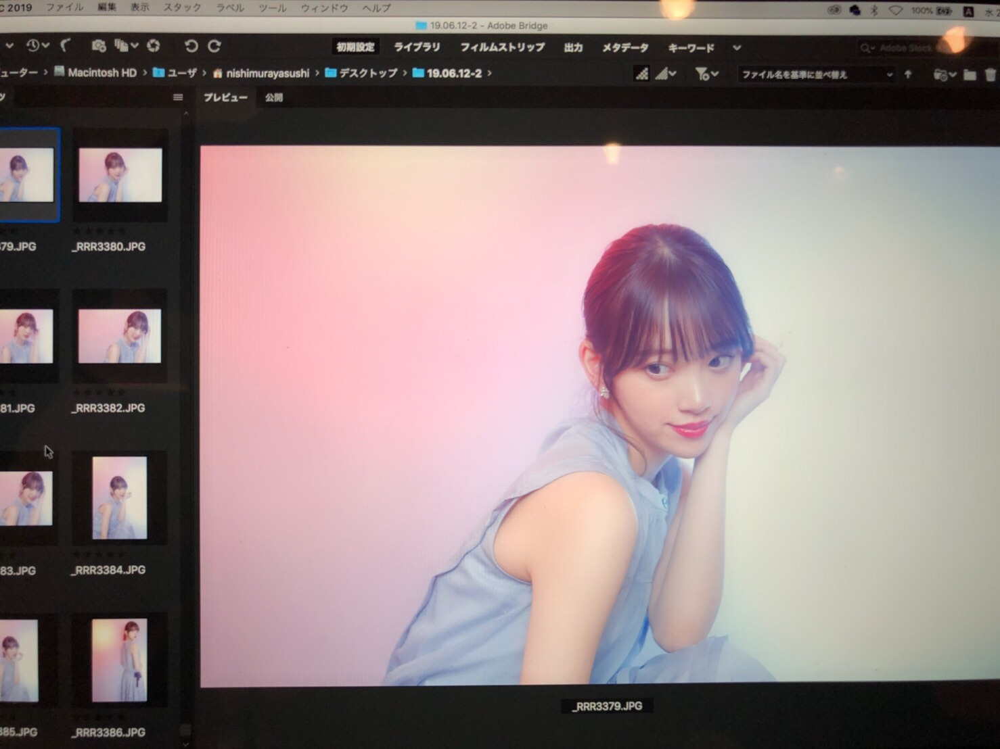

2019/0709Tue三度寝したい
玲香さんの卒業発表がありました。
正直、めちゃくちゃ寂しいです。どんどんメンバーが居なくなってしまうのは、心にぽっかり穴が空いたようで。
でも、玲香さんの次なる道を応援したいし玲香さんが決めたことだからわたし達メンバーが前向きな気持ちで背中を押さないと。ね。
9.1が最後ということでそれまでたくさん玲香さんの背中を見ていろんなことを吸収したいし一緒に思い出も作りたいです。
大好きだからこそ、残された私達が前向きに、強く居ないと。
玲香さん、最後までよろしくお願いします（ ; ; ）
最高のキャプテンです！
上海の思い出写真載せますね
焼き餃子とか焼き小籠包とか北京ダックとか
たくさん食べましたー。

one-piece...saint laurent
shoes...3.1 Phillip Lim

韓国で買ったワンピース
かわいい形のワンピースを夏はたくさん着たいなあ
ロマンティック気分で過ごしたい
この間メイクさんにね、
みおなちゃんは絶対前世どこかの国のお姫様だったよね
といわれたので
あ、わがままなのがバレてしまったと思ったら
まさかの
"品があるからだよ"と言っていただいたんです
最高の褒め言葉
う、うれしい、、、
確かにね、異常にお茶や紅茶が幼い頃から好きで食器や茶葉にもこだわっていたし、しかもなぞに丁寧に淹れて飲むのにもこだわっていたし、紅茶のおともはクッキーだし、読む本は外国の物語のが好きだし、やはりどこかマイペースというかわがまま気質だし、パジャマの質とかわいさにこだわりが強くて季節毎にコロコロ違うの着たがるし、でもなんだかんだシルク素材のパジャマが好きだし、今はプライベートスプーンズクラブのパジャマを1年くらい愛用してるし、姿勢とナイフフォークの使い方だけは昔から褒められるし、ドレスやキラキラのアクセサリーやティアラやヒールやバッグが大好きだし、白馬に乗った王子様がいつか私を迎えにきてくれると信じているから(みんなにはまた始まったよといわれるけど言い続けます)
前世かそのまた前世は、小さな自然豊かな国のお姫様だったらいいなぁ うふ ウフフ
女の子は一度はプリンセスに憧れるよね！


そういえば、質問受け付けておいてまだこたえられてなかった！
オフができたらバーッとこたえます！！
しばらく待たせちゃうかもです...
ごめんなさい...
では、またね☺︎
私は撮影行ってきまーす
ちょい寒いけど田舎で空気が綺麗なので生き生きとしてます。
2019/07/09 20:12
コメント(356)
でも見てみたい。プリンセス堀未央奈
韓国で買ったワンピース似合って可愛い。
さすがジブリ好きの未央奈ちゃん、トトロのねこバスに、乗る未央奈ちゃん。キャプテン桜井玲香さん。卒業するけど、寂しいけど、未央奈ちゃんは、未央奈ちゃんらしく頑張ってほしいー頑張れファイト未央奈ちゃん、これからも応援し続けます。負けるな未央奈ちゃん
韓国で買ったワンピース似合って可愛い。
さすがジブリ好きの未央奈ちゃん、トトロのねこバスに、乗る未央奈ちゃん。キャプテン桜井玲香さん。卒業するけど、寂しいけど、未央奈ちゃんは、未央奈ちゃんらしく頑張ってほしいー頑張れファイト未央奈ちゃん、これからも応援し続けます。負けるな未央奈ちゃん
未央奈ブログ更新ありがとう！
どんどんメンバーが卒業していっちゃうよね泣
本当に寂しくなる
玲香ちゃんが卒業発表したのは本当に寂しい気持ちでいっぱいだけど、前に進もうとするキャプテンの背中も押さなきゃって思った
これからもずっと応援し続ける！
餃子に、小籠包に北京ダック良いなぁ！
未央奈が美味しそうに食べてるところをテレビとかで見ると、めっちゃ食べたくなるんだよね！
食べるって最高だよね！
またコメントします！
どんどんメンバーが卒業していっちゃうよね泣
本当に寂しくなる
玲香ちゃんが卒業発表したのは本当に寂しい気持ちでいっぱいだけど、前に進もうとするキャプテンの背中も押さなきゃって思った
これからもずっと応援し続ける！
餃子に、小籠包に北京ダック良いなぁ！
未央奈が美味しそうに食べてるところをテレビとかで見ると、めっちゃ食べたくなるんだよね！
食べるって最高だよね！
またコメントします！
そうだ～～～～。質～～問。
ある日、魔法使いから、ひとつ能力をさずけると言われました。未央奈はどんな能力がほしいですか？私は断然、時を止める能力がほしいッス。又は、5分だけ時が戻る能力。未央奈は？
では。いつか回答くださいね。
ある日、魔法使いから、ひとつ能力をさずけると言われました。未央奈はどんな能力がほしいですか？私は断然、時を止める能力がほしいッス。又は、5分だけ時が戻る能力。未央奈は？
では。いつか回答くださいね。
未央奈ちゃん、今日もお疲れ様です＞＜ゞ
未央奈ちゃん主演の映画見たよー
恋愛映画とはいえライトなものかなーっと思ったら
思いのほかディープな内容でビックリ＠＠；
映画を見て感じた事は登場する誰もが心に深い傷を追っているが為に
自分に自信が持てない様に思えました
それ故に自分をぞんざいに扱い、周りを振り回し、周りに振り回されるシーンが
幾度となく展開されて見る度に痛々しい気持ちでいっぱいでした＞＜；
映画を通して改めて"自分を大切にする重要性"を再確認しました
心の傷が癒え、自分を大切に思えるようになり、自信を持つ事ができ
自分の心の奥底に眠る"真実の愛"に気づける日が来ますように．．．
"女の子は一度はプリンセスに憧れるよね！"
あら！未央奈ちゃんって夢見る少女だったのね！
でもこれはきっと、女の子にしか分からない気持ちなんだろうな～
未央奈ちゃんが美意識高いのもその気持ちが根底にあるからかもね！
まだ質問に答えてないみたいだから質問してみようかしら？
未央奈ちゃんにとって"美しさ"とは？
暑い日々が続いているので
体調に気をつけてお過ごし下さい＞＜ゞ
未央奈ちゃん主演の映画見たよー
恋愛映画とはいえライトなものかなーっと思ったら
思いのほかディープな内容でビックリ＠＠；
映画を見て感じた事は登場する誰もが心に深い傷を追っているが為に
自分に自信が持てない様に思えました
それ故に自分をぞんざいに扱い、周りを振り回し、周りに振り回されるシーンが
幾度となく展開されて見る度に痛々しい気持ちでいっぱいでした＞＜；
映画を通して改めて"自分を大切にする重要性"を再確認しました
心の傷が癒え、自分を大切に思えるようになり、自信を持つ事ができ
自分の心の奥底に眠る"真実の愛"に気づける日が来ますように．．．
"女の子は一度はプリンセスに憧れるよね！"
あら！未央奈ちゃんって夢見る少女だったのね！
でもこれはきっと、女の子にしか分からない気持ちなんだろうな～
未央奈ちゃんが美意識高いのもその気持ちが根底にあるからかもね！
まだ質問に答えてないみたいだから質問してみようかしら？
未央奈ちゃんにとって"美しさ"とは？
暑い日々が続いているので
体調に気をつけてお過ごし下さい＞＜ゞ
未央奈足細！！！！！！
チャァオ～～!☆彡
みおちゃん、こんばんは～～⤴️⤴️❕❤️❤️❤️❤️❤️笑顔
みおちゃんから～～～⤴️⤴️
プリンセスに憧れていたなんてぇ～～～⤴️⤴️
ちょっと驚き～～～⤴️⤴️❕❤️❤️❤️❤️❤️笑顔
やっぱり、みおちゃんからは～～～⤴️⤴️
正直～～～⤴️⤴️・・・
直接言葉で聞きたいのは～～～⤴️⤴️・・・
みおちゃん:「わらわは、王妃じゃ～～～⤴️⤴️❕」
みおちゃん:「全ては、我がしもべじゃ～～❕」・・
・・と、聞くと～～～⤴️⤴️
「うん、うん！そうそう！」ってぇ～～⤴️⤴️・・
しっくり、くるんだけどなぁ～～～⤴️⤴️❕❤️❤️❤️❤️❤️笑顔
みおちゃん、気を落とさないでねぇ❕❤️❤️❤️❤️❤️笑顔
☆大人しい、おすまし！より☆彡
りこも3度寝したいなぁー
テスト終わったから早く寝て3度寝する
テスト終わったから早く寝て3度寝する
姫ー、なんの撮影？！楽しみすぎるー！
もうすぐ玲香ちゃんが卒業するなんて、寂しい辛すぎる。俺はしばらく落ち込んで過ごすよ。これからの元乃木坂46桜井玲香としての活動はもちろん楽しみなんだけどね。大好きなメンバーの卒業は涙が出ちゃうよねー、うえーーん
もうすぐ玲香ちゃんが卒業するなんて、寂しい辛すぎる。俺はしばらく落ち込んで過ごすよ。これからの元乃木坂46桜井玲香としての活動はもちろん楽しみなんだけどね。大好きなメンバーの卒業は涙が出ちゃうよねー、うえーーん
みおなーはじめましてかな？
メンバーの卒業寂しいよね。
とくに推しメンだったから私は、なおさら寂しい。
9/1まで応援するって決めた。
みおなも頑張ってね❗
映画見てみたい
にんじん大好き なーなより
メンバーの卒業寂しいよね。
とくに推しメンだったから私は、なおさら寂しい。
9/1まで応援するって決めた。
みおなも頑張ってね❗
映画見てみたい
にんじん大好き なーなより
未央奈ちゃんブログ更新ありがとう！
昨日の夜10時ぐらいにブログをみたら、玲香さんが乃木坂46を卒業するというのを見て、号泣しました。
正直もうすこしやるのではないかと思いました。
でも、玲香さんが決めたことなので、精一杯応援します！
未央奈ちゃんも頑張ってください！
昨日の夜10時ぐらいにブログをみたら、玲香さんが乃木坂46を卒業するというのを見て、号泣しました。
正直もうすこしやるのではないかと思いました。
でも、玲香さんが決めたことなので、精一杯応援します！
未央奈ちゃんも頑張ってください！
ブログありがと！！
写真可愛すぎる
体調に気をつけてこれからも頑張ってください！！
写真可愛すぎる
体調に気をつけてこれからも頑張ってください！！
ブログ更新ありがとうございます。
メンバーがどんどん卒業していってしまうのはやっぱり寂しいことですね。
ロマンティックいか焼きの最初のれかたんの「ターコイズのリング」がもう聞けなくなると思うと寂しいです。メンバー想いの本当に素晴らしいキャプテンだったと思います。
今週こそホットギミックといつの間にかここにいるを観に行く！
メンバーがどんどん卒業していってしまうのはやっぱり寂しいことですね。
ロマンティックいか焼きの最初のれかたんの「ターコイズのリング」がもう聞けなくなると思うと寂しいです。メンバー想いの本当に素晴らしいキャプテンだったと思います。
今週こそホットギミックといつの間にかここにいるを観に行く！
ブログ更新ありがとう！
メンバーが卒業していくのは寂しいね
未央奈は永遠に乃木坂にいてほしいなww
じゃないと、泣きすぎで脱水症状になるかもしれないww
未央奈はみんなのプリンセスだよ
かわいくて、ちょっと変わってるけどねww
メンバーが卒業していくのは寂しいね
未央奈は永遠に乃木坂にいてほしいなww
じゃないと、泣きすぎで脱水症状になるかもしれないww
未央奈はみんなのプリンセスだよ
かわいくて、ちょっと変わってるけどねww
みおなさんの進化が楽しみです。
俺の乃木坂46ライブ京セラドーム参加までアト36日
俺の乃木坂46ライブ京セラドーム参加までアト36日
堀ちゃんお疲れ様です！
玲香さんが卒業しちゃうというのは辛いことですよね…
ここでまた乃木坂が変わるというチャンスでもあると思います
また1つ大きな坂を登って成長して欲しいです！
9月の神宮まで玲香さんとたくさんの思い出を作ってください
音楽の日とツアーも頑張ってください！！
玲香さんが卒業しちゃうというのは辛いことですよね…
ここでまた乃木坂が変わるというチャンスでもあると思います
また1つ大きな坂を登って成長して欲しいです！
9月の神宮まで玲香さんとたくさんの思い出を作ってください
音楽の日とツアーも頑張ってください！！
ね！
驚きました！！
思わず大声出ちゃいましたよ～(笑)
キャプテンがついに･･･
上海。
よく焼いてますね(笑)
って！
このバス！！
海外にも行けるんだ！(笑)
あ、あ～～水の上も走れましたっけ？
このワンピで踊ったら韓流アイドルですかね～
あ、わがまま姫だったんですね(笑)
お姫サマー。
英国風？
あ、なんか、情報が、氾濫してきた･･･
空気が綺麗なところいいですよね。
驚きました！！
思わず大声出ちゃいましたよ～(笑)
キャプテンがついに･･･
上海。
よく焼いてますね(笑)
って！
このバス！！
海外にも行けるんだ！(笑)
あ、あ～～水の上も走れましたっけ？
このワンピで踊ったら韓流アイドルですかね～
あ、わがまま姫だったんですね(笑)
お姫サマー。
英国風？
あ、なんか、情報が、氾濫してきた･･･
空気が綺麗なところいいですよね。
かわいすぎ〜 ❣️
未央奈ちゃん上海楽しかった？いろんなところに行けて羨ましいです。
激かわ♡♡
こんばんは！
ブログ更新ありがとうございます！！
玲香さんの卒業にビックリしてます！！
寂しくなりますね。
ついに来てしまったかという感じです
9月1日までまだあります。一緒に頑張ってください。
ワンピース姿似合ってますよ✨
白馬の王子様は必ず現れますよ(^-^)
これからも頑張ってください✨応援してます
体調に気を付けてお仕事頑張って下さい
ブログ更新ありがとうございます！！
玲香さんの卒業にビックリしてます！！
寂しくなりますね。
ついに来てしまったかという感じです
9月1日までまだあります。一緒に頑張ってください。
ワンピース姿似合ってますよ✨
白馬の王子様は必ず現れますよ(^-^)
これからも頑張ってください✨応援してます
体調に気を付けてお仕事頑張って下さい
めちゃめちゃお姫様嬉しいやんww
玲香ちゃん…ずっとキャップだと思ってたのにな…
こうなったらほーりーが次期キャップだ!!!
王子さまなりてーーーーーーーー!!!!
玲香ちゃん…ずっとキャップだと思ってたのにな…
こうなったらほーりーが次期キャップだ!!!
王子さまなりてーーーーーーーー!!!!
自分今日五度寝致しました！
めちゃくちゃ気持ち良い眠りでした！
めちゃくちゃ気持ち良い眠りでした！
明日ホットギミック見にいくよ！楽しみ！
未央奈さんこんばんは。今日もお疲れさまです。ブログ更新ありがとうございます。桜井玲香さんの卒業発表ビックリしましたよ 。確かに卒業は寂しいと思いますが残りの期間色々な事を吸収して笑顔で送り出してあげられるように頑張ってください！上海の写真とてもステキです
。確かに卒業は寂しいと思いますが残りの期間色々な事を吸収して笑顔で送り出してあげられるように頑張ってください！上海の写真とてもステキです 質問の答えはいつでも大丈夫です。待ってます！最近涼しい日が続いていますが週末は暑くなるみたいなので気をつけて下さいね。未央奈さんの笑顔で元気もらってます。明日も頑張ります！
質問の答えはいつでも大丈夫です。待ってます！最近涼しい日が続いていますが週末は暑くなるみたいなので気をつけて下さいね。未央奈さんの笑顔で元気もらってます。明日も頑張ります！
ブログ更新ありがとう！
脚きれい！！！❤️
どんなケアすればそんなに美脚になるの！？？
私もがんばってむくみ取ります
体調には気をつけて
応援してます❤️
脚きれい！！！❤️
どんなケアすればそんなに美脚になるの！？？
私もがんばってむくみ取ります
体調には気をつけて
応援してます❤️
更新ありがとう。
ジブリの写真かわいい
メンバーの卒業はさみしいですよね。
未央奈ちゃんは、今もプリンセスです

全部大好き
ジブリの写真かわいい
メンバーの卒業はさみしいですよね。
未央奈ちゃんは、今もプリンセスです
全部大好き
未央奈ブログ更新ありがとう
いきなりですが僕は今朝3度寝してしまいました…笑
そして玲香ちゃんの卒業もあり、全国ツアーもあり、色々大変な時期ではありますがポッカリ空いた心の穴はファンそして乃木坂のメンバーが埋めてくれると信じてこの先も未央奈らしく頑張ってほしいと願っています。玲香ちゃんとの乃木坂としての時間、短い期間やと思うけど大切にしてほしいです！話は変わりますが、小籠包や餃子を食べているモグモグ未央奈の写真楽しみにしてます！最近未央奈のブログをみることと、コメントすることが楽しみになっています！！最後に質問！！
未央奈がもし好きな人がいてあと少ししか学校で会うことがないって感じやったら告白しますか？？返答待ってます
それじゃあまたの…
いきなりですが僕は今朝3度寝してしまいました…笑
そして玲香ちゃんの卒業もあり、全国ツアーもあり、色々大変な時期ではありますがポッカリ空いた心の穴はファンそして乃木坂のメンバーが埋めてくれると信じてこの先も未央奈らしく頑張ってほしいと願っています。玲香ちゃんとの乃木坂としての時間、短い期間やと思うけど大切にしてほしいです！話は変わりますが、小籠包や餃子を食べているモグモグ未央奈の写真楽しみにしてます！最近未央奈のブログをみることと、コメントすることが楽しみになっています！！最後に質問！！
未央奈がもし好きな人がいてあと少ししか学校で会うことがないって感じやったら告白しますか？？返答待ってます
それじゃあまたの…
未央奈～！(;o;)
玲香の卒業発表、ビックリしたよね！
私も悲しい…。でも未央奈と一緒で玲香ちゃんの次なる道を応援する！！
ブログ更新ありがとう！
未央奈はプリンセス似合うよ♪
その言葉は嬉しいね！
玲香の卒業発表、ビックリしたよね！
私も悲しい…。でも未央奈と一緒で玲香ちゃんの次なる道を応援する！！
ブログ更新ありがとう！
未央奈はプリンセス似合うよ♪
その言葉は嬉しいね！
堀ちゃん更新ありがとー!
三度寝したい気持ち自分もすごいわかります笑
あわよくば四度寝、五度寝、、、もうずっと寝てたいです笑
あとホットギミック見に行きました。
堀ちゃんが初役にハマってました。引き込まれてあっという間に見終わっちゃいました。初主演とは思えない程よかったです。次も期待してます!!
質問です
猿は猿でもどんな種類の猿が好きなんですか？
また強いて言うなら他にどんな動物が好きですか？
答えてもらえるかなー？
まあ期待してます。
それではお休みなさい
三度寝したい気持ち自分もすごいわかります笑
あわよくば四度寝、五度寝、、、もうずっと寝てたいです笑
あとホットギミック見に行きました。
堀ちゃんが初役にハマってました。引き込まれてあっという間に見終わっちゃいました。初主演とは思えない程よかったです。次も期待してます!!
質問です
猿は猿でもどんな種類の猿が好きなんですか？
また強いて言うなら他にどんな動物が好きですか？
答えてもらえるかなー？
まあ期待してます。
それではお休みなさい
未央奈さん、ブログ更新ありがとうございます✨
玲香さんの卒業…寂しいですね。。
変革期にさしかかっている乃木坂からこれからも目が離せません。
夜の撮影なんですね。頑張ってください！
遅ればせながら質問も書き込んだので回答ブログ楽しみにしてます✨
玲香さんの卒業…寂しいですね。。
変革期にさしかかっている乃木坂からこれからも目が離せません。
夜の撮影なんですね。頑張ってください！
遅ればせながら質問も書き込んだので回答ブログ楽しみにしてます✨
未央奈ブログ更新ありがと！初めてコメントするよ！相変わらず可愛いですね！ホットギミックまだ見れてないから時間見つけてみたいと思います。楽しみにしてる！
玲香さんの卒業はたしかに寂しいけど乃木坂のこれからや何より玲香さんの為の決断だと思うので応援したいです
未央奈さんの言うようにみんなで背中を押してあげるべきですよね
未央奈さんがお姫様だったかもってなんかわかる気がします
未央奈さんの言うようにみんなで背中を押してあげるべきですよね
未央奈さんがお姫様だったかもってなんかわかる気がします
キャプテンの卒業、寂しいですね
2代目キャプテン未央奈あるかもね！
そうなったらより応援するわ！
そうなったらより応援するわ！
玲香さんの卒業発表はめちゃくちゃ驚いたし、悲しいけど応援したいと思います！
今の季節は少し寒い方が丁度いい。朝とか
今の季節は少し寒い方が丁度いい。朝とか
みおなちゃん更新ありがとう╰(*´︶`*)╯♡
れいかちゃんの卒業発表がありましたね（；＿；）
寂しくなりますね（；＿；）
でもれいかちゃんが決めた道なので全力で応援したいですね！
残りの期間は短いですが最後までたくさん思い出作ってね(● ˃̶͈̀ロ˂̶͈́)੭ꠥ⁾⁾
上海での思い出写真もありがと〜
素敵ですね･:*+.\(( °ω° ))/.:+
ワンピースも似合ってて良きです（╹◡╹）♡
確かにみおなちゃんは自然豊かな国のお姫様っぽいとこあるね(๑>◡<๑)
自己分析すごいね笑
質問返しはゆっくりで大丈夫ですよー♪(๑ᴖ◡ᴖ๑)♪
撮影お疲れ様です(*ﾟ▽ﾟ*)
ホットギミック観てきたよー(*･ω･)ﾉ
なんというか自分に語彙力が無いので表現が難しいですがとにかく素敵な映画でした（；＿；）
アイドルのみおなちゃんではなく、女優の堀未央奈という感じでまた違った素敵な一面を観られました･:*+.\(( °ω° ))/.:+
れいかちゃんの卒業発表がありましたね（；＿；）
寂しくなりますね（；＿；）
でもれいかちゃんが決めた道なので全力で応援したいですね！
残りの期間は短いですが最後までたくさん思い出作ってね(● ˃̶͈̀ロ˂̶͈́)੭ꠥ⁾⁾
上海での思い出写真もありがと〜
素敵ですね･:*+.\(( °ω° ))/.:+
ワンピースも似合ってて良きです（╹◡╹）♡
確かにみおなちゃんは自然豊かな国のお姫様っぽいとこあるね(๑>◡<๑)
自己分析すごいね笑
質問返しはゆっくりで大丈夫ですよー♪(๑ᴖ◡ᴖ๑)♪
撮影お疲れ様です(*ﾟ▽ﾟ*)
ホットギミック観てきたよー(*･ω･)ﾉ
なんというか自分に語彙力が無いので表現が難しいですがとにかく素敵な映画でした（；＿；）
アイドルのみおなちゃんではなく、女優の堀未央奈という感じでまた違った素敵な一面を観られました･:*+.\(( °ω° ))/.:+
未央奈ブログ更新ありがとう！
先週ようやくホットギミック見れました。自分もついこの間まで高校生だったのになんだか懐かしいような不思議な感覚になりました。「今を大事にする」何事においても大切ですよね！
先週ようやくホットギミック見れました。自分もついこの間まで高校生だったのになんだか懐かしいような不思議な感覚になりました。「今を大事にする」何事においても大切ですよね！
未央奈ブログ更新ありがとう〜！
いつもお洋服のブランド描いてくれるの嬉しい〜
参考にするね、ありがとう！
ネコバスに乗った未央奈可愛いなあ
たしかに未央奈お姫様っぽい！
私は、未央奈にだったらわがまま言われて振り回されたい（笑）
昨日やっとホットギミック見に行けたよ〜
はつみちゃんが可愛くて、愛おしくなったよ〜
守ってあげたくなる感じかと思えば、最後は自分の意思を強く持っていて、ちょっと未央奈に似てるなって思った◎
これからの女優未央奈の活躍すごく楽しみにしてるね！
いつもお洋服のブランド描いてくれるの嬉しい〜
参考にするね、ありがとう！
ネコバスに乗った未央奈可愛いなあ
たしかに未央奈お姫様っぽい！
私は、未央奈にだったらわがまま言われて振り回されたい（笑）
昨日やっとホットギミック見に行けたよ〜
はつみちゃんが可愛くて、愛おしくなったよ〜
守ってあげたくなる感じかと思えば、最後は自分の意思を強く持っていて、ちょっと未央奈に似てるなって思った◎
これからの女優未央奈の活躍すごく楽しみにしてるね！
未央奈ちゃんブログ更新ありがとうございます✨れいかちゃんが卒業するのでとても寂しいです ライブ握手会お疲れ様でした
ライブ握手会お疲れ様でした 体調壊さないようにライブ、お仕事頑張ってくださいね✨未央奈ちゃん大好き ♥️❤️
体調壊さないようにライブ、お仕事頑張ってくださいね✨未央奈ちゃん大好き ♥️❤️
こんばんは
いつかくるとわかっていてもメンバーの卒業はやっぱり寂しいよね。
いつかくるとわかっていてもメンバーの卒業はやっぱり寂しいよね。
玲香ちゃんとたくさん思い出作ってね！未央奈のブログ見たら元気が出ました！ありがとう
未央奈ちゃんお疲れ様です 今日の写真もどれも可愛いくて、 ✨見る度にどんどん未央奈ちゃんの事が大好きになります。凄く癒されます。一家に一人未央奈ちゃんみたいな人がいればなぁ‼️未央奈ちゃんは乃木坂に入って沢山の素晴らしい先輩や同期や後輩、スタッフさん、他の芸能界の友人に恵まれていますね‼️それも未央奈ちゃんの人柄や頑張っている姿を見ているからだと思います。私も未央奈ちゃんを見習わなければならない事がありすぎです
質問1
今年の七夕願い事しましたか？もししたのなら、どんな願い事しましたか？
質問2
石川県に来たことありますか？もし来たことあるなら、石川県の好きなグルメは何ですか?来たことないのなら、食べてみたいグルメありますか？私のお勧めは石川県民のソウルフード8番ラーメンの酸辣湯麺です。後食べたことがありませんが、未央奈ちゃんにお勧め金沢土産は金沢プリンと加賀棒茶です。どっちも未央奈ちゃん大好きでしょ‼️後五郎島金時のスイートポテト。是非、石川県行く機会があれば食べて見てね‼️大好きやおー おやすみなさい
質問1
今年の七夕願い事しましたか？もししたのなら、どんな願い事しましたか？
質問2
石川県に来たことありますか？もし来たことあるなら、石川県の好きなグルメは何ですか?来たことないのなら、食べてみたいグルメありますか？私のお勧めは石川県民のソウルフード8番ラーメンの酸辣湯麺です。後食べたことがありませんが、未央奈ちゃんにお勧め金沢土産は金沢プリンと加賀棒茶です。どっちも未央奈ちゃん大好きでしょ‼️後五郎島金時のスイートポテト。是非、石川県行く機会があれば食べて見てね‼️大好きやおー おやすみなさい
更新有難う！
御疲れ様でした！
玲香が卒業する事なのに、
非常に寂しいであるのは、
だが仕方が無いな。
其の様な事は常に来なければならぬ、
事実を受け入れ、
我々は玲香の新たな目標で応援なさい。
然して何時もの様に頑張って下さい、
未央奈の努力を楽しみにしています。
常に必ずしても応援しています。
どうか御身体に気を付けて下さい！
ずっと大好き！
御疲れ様でした！
玲香が卒業する事なのに、
非常に寂しいであるのは、
だが仕方が無いな。
其の様な事は常に来なければならぬ、
事実を受け入れ、
我々は玲香の新たな目標で応援なさい。
然して何時もの様に頑張って下さい、
未央奈の努力を楽しみにしています。
常に必ずしても応援しています。
どうか御身体に気を付けて下さい！
ずっと大好き！
玲香ちゃん、卒業しちゃうのは正直だいぶ寂しいけど...。とにかく、卒業後も玲香ちゃんの活躍に期待&楽しみにしながら応援し続けたい‼(´∀｀)ﾉ そして、上海でも堀ちゃんの可愛さは際立っただろうねぇ!! それに、堀ちゃんほんとスタイル良すぎる!!!(〃▽〃) 白馬の王子様。に関しては、いずれ現れるといいねぇ♪♪としか言えないけど...笑。
お姫様ブログ更新ありがとう。
三度寝良いよね、
良くやりますよ(๑• ̀ω•́ ๑)✧
離れてしまうのは寂しいよね…
残された時間の中で沢山思い出作り
できるといいね。
撮影行ってらっしゃい。
風邪引かないように
気をつけてね(｡･ω･)ﾉﾞ
三度寝良いよね、
良くやりますよ(๑• ̀ω•́ ๑)✧
離れてしまうのは寂しいよね…
残された時間の中で沢山思い出作り
できるといいね。
撮影行ってらっしゃい。
風邪引かないように
気をつけてね(｡･ω･)ﾉﾞ
もープリンセス超えてます。
可愛過ぎです。
Q.男性の髪型はショート？普通？ロング？
可愛過ぎです。
Q.男性の髪型はショート？普通？ロング？
言いたいこと、伝えたいことがたくさんありすぎて、そんな今にも破裂しそうな想いがスクリーンいっぱいに溢れていて、若々しいエネルギーが若々しいスピーディーな展開の中で、あっという間に駆け抜けて行く２時間の青春群像。
「ホットギミック ガールミーツボーイ」はそんな映画でした。
何より、明るい希望に満ちたラストシーンに"愛"が感じられ、心暖まる余韻に包まれました。
未央奈ちゃんをはじめ出演者の皆さんの演技は、まるで格闘しているかのような真剣勝負を感じ、そもそも映画そのものが観る側に格闘を挑んできます。
それが私は心地よく、映画を観たなぁという爽快感を抱きました。
山戸監督の作品には、映像作家の持つ特有の、観る者の五感に問いかける特殊性を感じていましたが、明らかに本作品は、若い青春の苦悩に、映画だからこそ出来る映像芸術を見事に取り込んだ作品として、とてもわかりやすく昇華されていて、監督としてもほとんど悔いの残らない作品になったのではないでしょうか。でもそこには未央奈ちゃんの存在が不可欠だったことは、のちの監督のインタビューで何度も目にしました。
私もそう感じました。
堀未央奈と成田初が同化して、でも私に見えるのはやっぱり堀未央奈でした。その存在感を、山戸監督は求めていたのだろうなと思いましたし、今、上海国際映画祭での未央奈ちゃんの評価に、とても納得しています。
最後の最後、モノクロ画面にタワーだけ色がついているシーンに、山戸監督は本当に映画が好きな人なんだなと理解しました。
そして忘れてはいけない日本映画専門チャンネルステーションIDの「映画の女の子」も素敵な作品ですね。こちらもまた堀未央奈ありきの映像が美しく、見飽きることのない愛すべき小品です。
本当に長々とすみません。
とても楽しい２時間でした。
またスクリーンで逢える日を楽しみにしています。
親愛なる
成田初＝堀未央奈(新人)様へ
「ホットギミック ガールミーツボーイ」はそんな映画でした。
何より、明るい希望に満ちたラストシーンに"愛"が感じられ、心暖まる余韻に包まれました。
未央奈ちゃんをはじめ出演者の皆さんの演技は、まるで格闘しているかのような真剣勝負を感じ、そもそも映画そのものが観る側に格闘を挑んできます。
それが私は心地よく、映画を観たなぁという爽快感を抱きました。
山戸監督の作品には、映像作家の持つ特有の、観る者の五感に問いかける特殊性を感じていましたが、明らかに本作品は、若い青春の苦悩に、映画だからこそ出来る映像芸術を見事に取り込んだ作品として、とてもわかりやすく昇華されていて、監督としてもほとんど悔いの残らない作品になったのではないでしょうか。でもそこには未央奈ちゃんの存在が不可欠だったことは、のちの監督のインタビューで何度も目にしました。
私もそう感じました。
堀未央奈と成田初が同化して、でも私に見えるのはやっぱり堀未央奈でした。その存在感を、山戸監督は求めていたのだろうなと思いましたし、今、上海国際映画祭での未央奈ちゃんの評価に、とても納得しています。
最後の最後、モノクロ画面にタワーだけ色がついているシーンに、山戸監督は本当に映画が好きな人なんだなと理解しました。
そして忘れてはいけない日本映画専門チャンネルステーションIDの「映画の女の子」も素敵な作品ですね。こちらもまた堀未央奈ありきの映像が美しく、見飽きることのない愛すべき小品です。
本当に長々とすみません。
とても楽しい２時間でした。
またスクリーンで逢える日を楽しみにしています。
親愛なる
成田初＝堀未央奈(新人)様へ
プリンセス未央ちゃんおはこんばちわ
どんどんメンバーが卒業していくのは寂しいね
おいらも未央ちゃんが卒業したら、乃木坂ファン卒業だな 多分
なんか、昨日関東は寒かったけど、未央ちゃん風邪ひかないように気をつけね
どんどんメンバーが卒業していくのは寂しいね
おいらも未央ちゃんが卒業したら、乃木坂ファン卒業だな 多分
なんか、昨日関東は寒かったけど、未央ちゃん風邪ひかないように気をつけね
玲香さんがキャプテンやってなかったらこんな最高なグループできてないよね。
まいまい、ななみん、生駒ちゃん、若様、なぁちゃん、その他にもたくさんのメンバーが卒業もあって乃木坂46というグループが少しずつ成長していくのを感じられて、この先もずっと登り坂だったらいいな。卒業ってゆうと寂しくなっちゃうけど本人が1番考えた結果だから温かく送り出してあげるのが自分たちにできることだよね。玲香さんは卒業しても乃木坂のキャプテンとしてずっとずっと永遠に記憶に残り続けるほんと頼れる存在だった。サヨナラに強くならなくちゃね。
今は、みおなの笑顔が見れることが何よりも幸せです。
体調には気をつけてお仕事頑張ってね^_^
まいまい、ななみん、生駒ちゃん、若様、なぁちゃん、その他にもたくさんのメンバーが卒業もあって乃木坂46というグループが少しずつ成長していくのを感じられて、この先もずっと登り坂だったらいいな。卒業ってゆうと寂しくなっちゃうけど本人が1番考えた結果だから温かく送り出してあげるのが自分たちにできることだよね。玲香さんは卒業しても乃木坂のキャプテンとしてずっとずっと永遠に記憶に残り続けるほんと頼れる存在だった。サヨナラに強くならなくちゃね。
今は、みおなの笑顔が見れることが何よりも幸せです。
体調には気をつけてお仕事頑張ってね^_^


玲香さん卒業寂しくなるね、ファンもキャプテンが残していったものを応援しますよ。
新しい乃木坂に期待です。
上海にジブリあるんだね、トトロのバスかわいいね。
堀ちゃん脚超ほっそ！
超ミニのワンピかわいいよ。
前世はどこかの姫様、納得だね。
実際のアンサー楽しみにしてるよ。
バイバイキーン